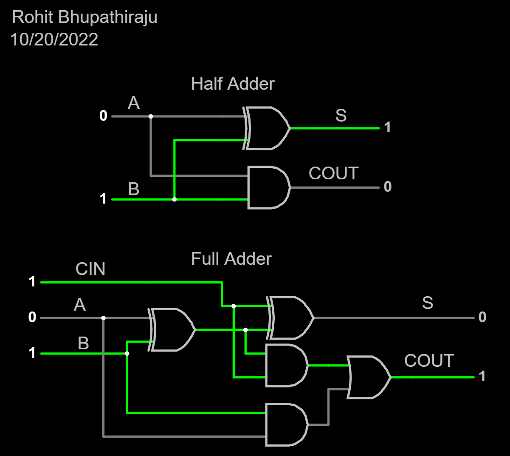

Name: Rohit Bhupathiraju
Journal: J1017
Date: 10-14-2022
I recieved help from: No One
I helped: No One
Half Adder & Full Adder

1.1: What truth table do you recognize that produces the output of the Carry column?
The AND truth table.
1.2: What truth table do you recognize that produces the output of the Sum column?
The XOR truth table.
2.1: What do you notice about the relationship between the first-half (top four rows) of the full-adder as compared to all of the rows of the half-adder?
They have the same outputs.
2.2: Why is this true?
The carry input is 0 so it doesnt affect the outputs.
3.1: Why does the least significant bit position use a half-adder rather than a full-adder?
There will be no carries in the least significant bit position so a full-adder isn't needed.
3.2: Assume that proper inputs are applied for all bits in numbers A and B. Will the correct output from S be available instantaneously? If not, why not?
No, because the carries on the adders depend on the digit to the left of it so it needs to wait for those processes to complete.
3.3: Assume that we have a standard (non-scientific calculator) capable of adding two 16-bit words. Two numbers, A and B, are added together. After the addition, it is noted that C15 is high. What can we infer? What is this state commonly called?
We can infer that A and B were large numbers. This state is commonmly called a Ripple Carry Adder.
What did I learn? What is the "big idea"?
How computers perfrom addition through the use of half-adders and full-adders.
What challenges did I encounter?
I didn't encounter any problems during this lesson.
How could this experience be improved?
N/A
Free Reflection: How has what I've learned affected my thinking?
This lesson showed me how computers preform basic function such as addition through the use of logic gates. It taught me what half-adders and full-adders are which are essential to a computer's functionality.